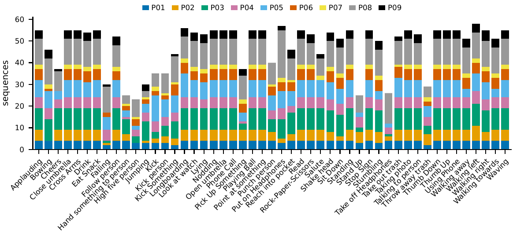

The same human actions recorded simultaneously by four
LiDAR scanning principles and a depth camera: a controlled benchmark for
cross-sensor action recognition on laser range data.
Raphael Memmesheimer · Patrik Schmidt · Dietrich Paulus
Paper under review; a preprint will be linked here.
The dataset in 90 seconds.
2,341sequences
49action classes
9subjects
4 + 1LiDARs + RGB-D-IR
3.1 hsynchronized recording
2D + 3Dposes included
The same action, six sensors
Velodyne HDL-32E (spinning), Livox MID-100 (prism rosette),
Cepton Vista-P60 (micro-motion), Blickfeld Cube 1 (MEMS raster) and an
Orbbec Astra Pro (RGB, depth, IR) on one static rig, one clock, one
calibrated frame.
One take, all modalities. Point clouds colored by distance.
Applauding · 2D pose overlayWaving · every sequence ships such a previewHigh five · two persons, tracked per actorFollow person · both actors tracked and anonymized

49 classes: daily activities, traffic gestures, safety-critical
events (falling, stumbling, lying), object and person-person interactions.
Colored by subject.
Explore the sensors
All four LiDARs and the depth camera, synchronized. Drag to
orbit (cameras are linked), pick an action, scrub the timeline. The
Blickfeld keeps a known offset of about half a metre that no registration
method could remove; details in the datasheet.
loading …
Protocols
Four official protocols; splits ship with the data.
cross-subject
Split by person: 5 train, 4 test.
cross-take
The last take of every session × action is held out.
cross-sensor
Train on one sensor, test on another. The scan pattern is the only variable.
one-shot
10 novel classes, one exemplar each, nearest neighbour. Chance 10%.
Results
Top-1 accuracy in percent over 49 classes (2.0% chance), best
reproducible baseline per sensor.
Sensor
Model
Cross-subject
Cross-take
Velodyne HDL-32E
PointNet
24.1 ± 1.0
33.2 ± 0.9
Cepton Vista-P60
PointNet
21.1 ± 0.6
26.0 ± 0.8
Livox MID-100
PointNet
15.6 ± 1.1
21.6 ± 0.7
Blickfeld Cube 1
SparseConv
14.7 ± 0.5
20.6 ± 1.9
RGB-D (depth)
PointNet / P4Transformer
11.5 ± 0.3
18.2 ± 0.3
2D pose (from RGB)
Pose-GRU
35.3 ± 1.3
46.6 ± 0.9
Isolating the actor with the shipped person crops lifts the LiDARs by
14 points on average; the best LiDAR then matches the pose stream.
Sensors do not transfer
Train on one sensor, test on another (cross-subject, PointNet).
train \ test
Velodyne
Livox
Cepton
Blickfeld
depth
Velodyne
24.1
4.7
10.1
2.0
3.2
Livox
6.3
15.6
5.2
1.9
6.3
Cepton
10.9
3.0
21.1
2.9
2.3
Blickfeld
3.0
2.0
4.2
10.0
2.5
RGB-D (depth)
4.9
2.6
2.7
3.2
11.5
Off the diagonal, accuracy collapses towards chance. The scan pattern,
not point density, is the barrier: resampling along the target's rays
closes 76% of the gap, and five labeled takes per class of the target
recover 85% of full-data accuracy.
Camera-free is not automatically anonymous
Person re-identification from the same clips, cross-action,
nine enrolled subjects (11.1% chance).
Sensor
Person re-ID
Height only
Livox MID-100
64.8 ± 1.1
11.8
RGB-D (depth)
60.7 ± 0.7
11.1
Cepton Vista-P60
47.0 ± 1.3
14.4
Velodyne HDL-32E
46.6 ± 0.8
17.5
Blickfeld Cube 1
41.0 ± 1.1
15.7
Body geometry, not the face, identifies people, and it survives a change
of clothing. No tier of this dataset should be treated as anonymous data.
Pose estimation from LiDAR
17 COCO joints from person-cropped points alone, supervised by
the shipped depth-lifted 3D skeletons (cross-subject).
Sensor
MPJPE [cm]
PCK@20 cm
Velodyne HDL-32E
15.5
76.5%
Livox MID-100
16.6
73.1%
Cepton Vista-P60
20.5
60.1%
Blickfeld Cube 1
28.0
41.1%
mean pose (learns nothing)
23.0
50.1%
Full tables, ablations, few-shot adaptation and the anonymisation
trade-off are in the paper.
Leaderboard
Community results on the official protocols. Submit yours
through the contact form; entries are verified
against the shipped splits.
loading …
Download
One archive per modality. laseract_core.tar
holds labels, splits and calibration and is always needed. Interim mirror;
the release moves to Hugging Face and these links will redirect. Cite
by name and version (v1.1).
Browse everything at laseract.onwai.eu/data/. Verify, then reassemble
the split Velodyne pack:
sha256sum -c SHA256SUMS
cat laseract_velodyne.tar.* > laseract_velodyne.tar
tar xf laseract_velodyne.tar
RGB and IR show faces and are released for research use on
request. Everything above is face-free and
carries the CC BY-NC 4.0 licence. A numpy-only loader with an
optional PyTorch wrapper ships in the companion toolkit.
Ethics. Adult subjects gave written informed consent and signed a
GDPR release under our institution's data-protection procedure. All
subjects are pseudonymized and faces are blurred in every published preview
and figure.
BibTeX
@article{memmesheimer2026laseract,
title = {LaserAct: A Multi-LiDAR Dataset for Human Action
Recognition Across Scanning Principles},
author = {Memmesheimer, Raphael and Schmidt, Patrik and Paulus, Dietrich},
journal = {IEEE Robotics and Automation Letters},
year = {2026},
note = {Under review}
}